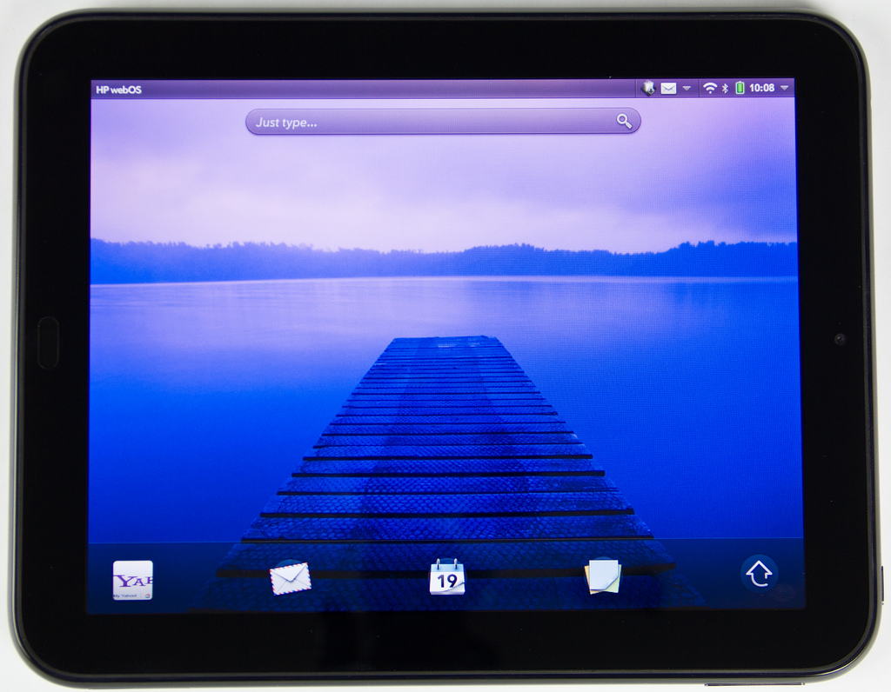

HP TouchPad (hp-tenderloin)
|
 HP TouchPad | |
| Manufacturer | HP |
|---|---|
| Name | TouchPad |
| Codename | hp-tenderloin |
| Released | 2011 |
| Category | testing |
| Original software | WebOS on Linux |
| Hardware | |
| Chipset | Qualcomm Snapdragon S3 (APQ8060) |
| CPU | Dual-core 1.2 GHz Scorpion |
| GPU | Adreno 220 |
| Display | 768x1024 |
| Storage | 16/32 GB |
| Memory | 1 GB |
| Architecture | armv7 |
{kind=link}
| USB Networking |
Works
|
|---|---|
| Flashing | |
| Touchscreen |
Works
|
| Display |
Works
|
| WiFi |
Works
|
| FDE | |
| Mainline |
Broken
|
| Battery |
Works
|
| 3D Acceleration |
Broken
|
| Audio |
Broken
|
| Bluetooth |
Broken
|
| Camera |
Broken
|
| GPS |
Unavailable
|
| Mobile data |
Unavailable
|
| SMS |
Unavailable
|
| Calls |
Unavailable
|
| USB OTG |
Broken
|
| NFC |
Unavailable
|
| Accelerometer | |
|---|---|
| Magnetometer | |
| Ambient Light | |
| Proximity | |
| Hall Effect | |
| Barometer | |
| Power Sensor | |
| Camera Flash | |
|---|---|
| Keyboard | |
| Touchpad | |
| USB-A | |
| HDMI/DP | |
| Ir TX | |
| Ir RX | |
| Stylus | |
| Haptics | |
| Ethernet | |
| FOSS bootloader | |
The HP TouchPad is a tablet that originally ran Palm's webOS, although many versions of Android were later ported to it.
Contents
Status
Experimental support for this device is available here: https://gitlab.com/postmarketOS/pmaports/-/merge_requests/2791
Contributors
Installation
A detailed installation procedure has yet to be developed, and depends somewhat on what software is currently installed on the device. In summary, the procedure is as follows:
- Delete of shrink one of the existing LVM volumes (such as the Android data partition) by at least 1 GiB (as much space as you want to dedicate to postmarketOS). If you want to retain your data on another OS, you must first shrink the filesystem to avoid corruption. If you want to remove all other OSes, you may delete all LVM volumes.
- Create a 64 MiB LVM volume named "pmos-boot"
- Create a LVM volume named "pmos-root" that fills the rest of the available space.
- Use pmbootstrap to create a split installation and export the files.
- Run the following commands to create an image compatible with moboot or the standard bootloader:
$ mkimage -A arm -O linux -T kernel -C none -a 0x40208000 -e 0x40208000 -n kernel -d vmlinuz uImage.vmlinuz $ mkimage -A arm -O linux -T ramdisk -C none -a 0 -e 0 -n initramfs -d initramfs uImage.initramfs $ mkimage -A arm -O linux -T multi -C none -a 0 -e 0 -n postmarketOS -d uImage.vmlinuz:uImage.initramfs uImage.postmarketOS
- Use an environment such as an Android recovery to copy "uImage.postmarketOS", "hp-tenderloin-boot.img" and "hp-tenderloin-root.img" to some temporary storage location on the device.
- Copy "uImage.postmarketOS" into the ext3 filesystem in /dev/mmcblk0p13, usually mounted at /boot in Android. This will only work if you have moboot installed, otherwise the file must be named "uImage".
- Use dd (on the device) to write "hp-tenderloin-boot.img" to the "pmos-boot" LVM volume
- Use dd to write "hp-tenderloin-root.img" to the "pmos-root" LVM volume.
- Reboot the device and select postmarketOS from the moboot menu (if installed).
Serial console
The TouchPad has a serial port in the headphone connector. It is activated by setting GPIO pin 58. Moboot will enable this feature if you create a file named "moboot.sercon.postmarketOS" in the boot partition (/dev/mmcblk0p13) containing the string "yes".
The pinout for the serial connector on the headphone jack is:
- Tip: TX
- Ring: RX
- Sleeve: GND
The port operates at around 2.9V, so it recommended to use a voltage divider to reduce the voltage from a 3.3V serial adapter to avoid any possibility of damaging the port.
Components
Display
The framebuffer driver generally works and has been tested with Weston and XFCE4. It appears that the framebuffer and backlight will shut off if not actively updated. This causes the splash screen to only appear for a fraction of a second, but everything works fine once the desktop environment loads. Occasionally, the backlight will not stay off after the display wakes up, but this can be fixed by running:
$ echo 63 | sudo tee /sys/devices/platform/msm_fb.196609/leds/lcd-backlight/brightness
Touchscreen
Most of the touchscreen driver is implemented in userspace, using a driver adapted from Android (see ts-srv package). The touchscreen controller appears to be implemented using custom firmware on a Cypress CY8CTMA395 microcontroller, and primarily communicates with the processor using UART.
Wifi
Wifi is supported using the ath6kl driver. Some 5 GHz channels are missing, due to some regulatory domain problem.
GPU Acceleration
The downstream KGSL DRM driver is supported, but is not compatible with xf86-video-freedreno. Attempting to start X11 results in a segfault after running into the assertion here: https://gitlab.freedesktop.org/mesa/drm/-/blob/main/freedreno/kgsl/kgsl_ringbuffer.c#L168
Audio
Audio doesn't work, even though the drivers are there and the alsa devices are created. Attempting to play or record audio results in an I/O error.
USB OTG
When a USB OTG cable is connected, dmesg shows the controller switching to host mode. The USB port is unable to supply power, but even if self powered devices are connected, they are not recognized.
Old info
Next steps
- package novacom for Alpine
Flashing/booting
It looks like the actual boot process on the touchpad is just uBoot. We only need to package novacom for alpine to push images to the boot partition of the device.
http://webos-ports.org/wiki/Template:Tenderloin_Install_Steps
Novacom sources can be found here. The specific repo and dependencies are as follows:
We can probably use the novacom pkgbuild from the AUR in alpine: https://aur.archlinux.org/packages/palm-novacom-git/
We might also need novacomd, not sure yet.